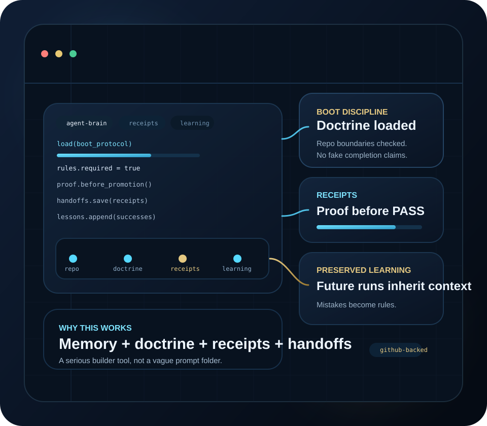
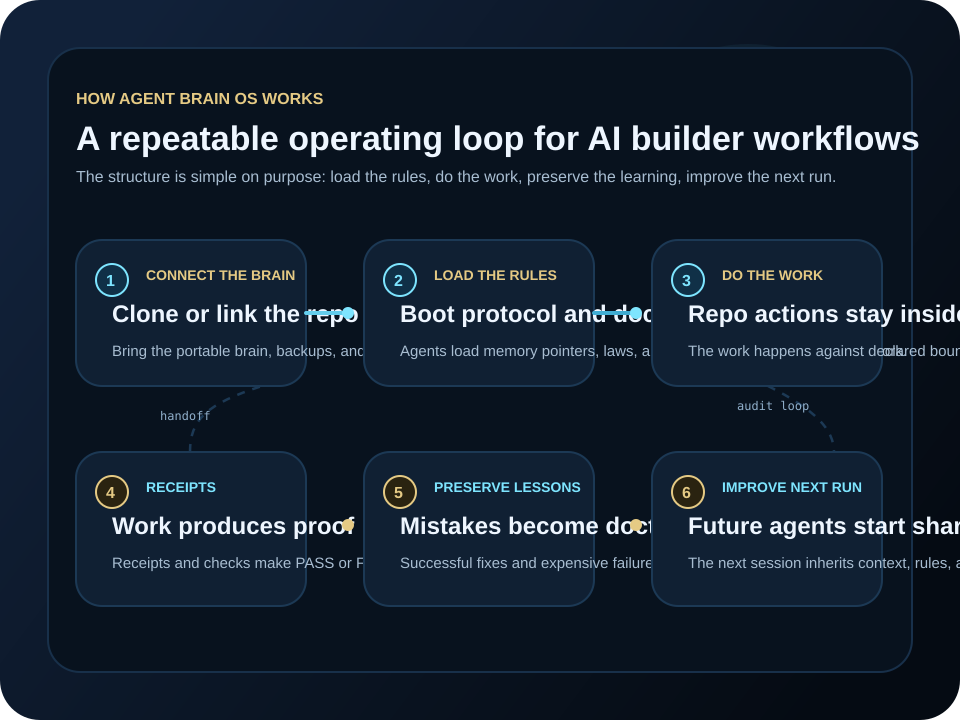

01
Context resets
Your agent starts the next session half-blind, so it relearns what the repo already taught it.
Portable memory, doctrine, proof, and audit discipline for AI coding workflows
Agent Brain OS is a GitHub-backed operating brain for AI agents with memory, doctrine, proof rules, audit discipline, handoffs, and shared learning so your agents stop repeating the same mistakes.
The model is not always the problem. The missing operating system is.

Problem
Most AI coding failures are not about raw model intelligence. They happen because sessions forget context, handoffs are weak, proof rules are loose, and valuable lessons disappear inside chat windows.
01
Your agent starts the next session half-blind, so it relearns what the repo already taught it.
02
"Done" gets reported before there is any proof, which creates false confidence and expensive cleanup.
03
Fixes live in the chat transcript instead of becoming reusable doctrine, receipts, and prevention rules.
04
Weak proof discipline leads to layered patches, fuzzy ownership, and fragile codebase truth.
05
Good decisions and bad decisions both vanish when there is no durable operating memory behind the work.
06
Teams using Codex, Gemini, Claude, and custom agents end up with scattered standards and inconsistent outcomes.
What Agent Brain OS Is
This is not a prompt pack and it is not a fake autonomous shell. It is a structured operating layer that gives your AI builder durable memory, doctrine, receipts, and cleaner handoffs across real projects.
Keep the operating memory in a versioned structure that can move with the project, not with one chat tab.
Define what must be loaded, what cannot be claimed, and which truth boundaries agents have to respect.
Stop "looks done" from becoming "done" by forcing proof, auditability, and bounded completion claims.
Preserve what matters between sessions, across agents, and through real repo work instead of starting from scratch.
Turn expensive mistakes and successful fixes into shareable rules so future runs improve instead of repeating drift.

How It Works
The goal is not more complexity. The goal is a clean sequence that preserves truth and gets better with every run.
Attach the GitHub-backed brain structure to the repo or workflow you want the agents to work inside.
Agents start by loading the active doctrine, memory pointers, and boundary rules before touching the codebase.
Work is shaped by proof rules, operating laws, audit discipline, and repo boundary checks rather than vibes.
Repairs, builds, and audits generate visible receipts so completion claims stay tied to evidence.
Important failures and successful patterns get written back into the shared learning structure instead of vanishing.
The next agent inherits cleaner context, stronger guardrails, and better handoff quality from the last one.
What's Included
Everything is designed to make the workflow more durable, more portable, and easier to audit.
Who It's For
If you are already using AI to build software, ship client work, or coordinate multiple agent lanes, this is where the operating discipline starts to matter.
Who need cleaner execution and fewer "done" claims that collapse under inspection.
Who want their agent workflow to remember the right things and stop recreating mistakes.
Who need shared doctrine, better handoffs, and more stable delivery quality across client work.
Who want one operating brain behind multiple model lanes instead of scattered working styles.
Who are building agent systems and need portable learning, proof discipline, and auditable repo behavior.
Proof, Doctrine, Trust
Agent Brain OS is valuable because it creates structure, visibility, and preserved learning around the work. It does not promise perfect models or fake autonomous certainty.
Agents load the operating rules before work begins, so decisions happen inside declared boundaries.
Work is easier to inspect because proof, receipts, and scope claims are expected instead of optional.
PASS means less hand-waving and more evidence tied to the active tree and actual runtime behavior.
The operating memory stays with the work, so you can move between agents without losing the important context.
Successes and failures are preserved into reusable doctrine instead of staying trapped inside one session.
The brain is for structure, rules, receipts, and learning. It is not a place to dump secrets or pretend risk disappears.
Pricing / Early Access
Early access keeps the scope clear: install the operating brain, tune the doctrine, and give your workflow a stable foundation before layering on anything else.
Early Access Setup
£497
One-off early access install for the portable brain, doctrine structure, and rollout guidance.
Maintenance + Doctrine Updates
£49/month
Optional monthly maintenance for doctrine refinements, updates, and continued operating cleanup.
FAQ
No. It is an operating system for agent work: doctrine, memory, proof rules, receipts, audit discipline, handoffs, and preserved learning.
No. It makes the workflow stronger, more durable, and easier to audit. The point is to reduce avoidable chaos, not to pretend models stop making mistakes.
No. Secrets should stay in proper secret managers or environment handling. The brain is for doctrine, memory structure, receipts, and operating rules.
It is designed for AI coding workflows that use tools like Codex, Gemini, Claude, and other agentic systems that can load doctrine and operate against a structured repo.
Yes, if you explicitly govern what is shared, what remains project-specific, and what never enters the shared brain. The safe part comes from the rules, not wishful thinking.
Final CTA
Start with a portable GitHub-backed operating brain, a doctrine your agents can load, and proof rules your workflow can trust. Early access is delivered as a direct setup engagement, not a fake self-serve platform.